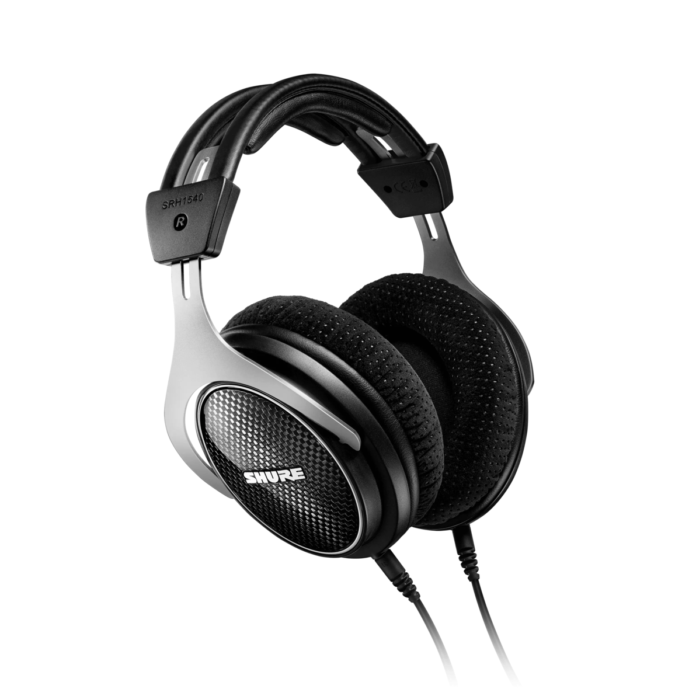

Whether you're a seasoned audiophile or a casual listener, these top 10 headphones redefine the way you experience music. Explore the world of audio perfection with these exceptional devices, each offering a unique blend of craftsmanship, comfort, and unparalleled sound quality.
1. Sennheiser HD 800S
Elevate Your Audio Experience to New Heights,
The Sennheiser HD 800S is a masterpiece in audio engineering, delivering unparalleled sound clarity and an expansive soundstage. Immerse yourself in a world of sonic brilliance.
Pros :
Unparalleled sound clarity and expansive soundstage.
Masterpiece in audio engineering.
Ideal for audiophiles seeking top-tier performance.
Cons :
Higher price point.
 2. Sony WH-1000XM4
2. Sony WH-1000XM4
Silence Meets Superior Sound,
Sony's WH-1000XM4 is the epitome of noise-canceling excellence, paired with rich, detailed audio. Enjoy your music in peace with these industry-leading wireless headphones.
Pros :
Best-in-class noise-canceling technology.
Rich and detailed audio quality.
Excellent for travelers and commuters.
Cons :
Relatively higher price.
 3. Audeze LCD-4
3. Audeze LCD-4
Where Precision Meets Luxury,
Indulge in the Audeze LCD-4's planar magnetic technology, providing an unmatched level of detail and warmth. Crafted with precision, these headphones redefine high-end audio.
Pros :
Planar magnetic technology for exceptional detail.
Crafted with precision and luxury materials.
Ideal for those who prioritize audio warmth.
Cons :
High-end pricing.
 4. Beyerdynamic DT 1990 Pro
4. Beyerdynamic DT 1990 Pro
Studio-Quality Performance for Audiophiles,
Experience studio-grade audio with the Beyerdynamic DT 1990 Pro. These open-back headphones deliver transparent sound reproduction, making them a favorite among audio enthusiasts.
Pros :
Studio-grade audio performance.
Transparent sound reproduction.
Great choice for audiophiles and professionals.
Cons :
Open-back design may not be suitable for all environments.
 5. Audio-Technica ATH-M50x
5. Audio-Technica ATH-M50x
Timeless Excellence in Every Note,
A classic in the world of headphones, the ATH-M50x by Audio-Technica remains a benchmark for audio professionals. Immerse yourself in accurate sound reproduction with these iconic headphones.
Pros :
Timeless excellence in sound reproduction.
Benchmark for audio professionals.
Affordable without compromising quality.
Cons :
Wired, which may be a drawback for some users.
6. Focal Utopia
Audiophile's Dream Come True,
Step into the audiophile's paradise with the Focal Utopia. Renowned for its exceptional precision and natural sound, these headphones redefine what's possible in high-fidelity audio.
Pros :
Renowned for exceptional precision and natural sound.
Ideal for audiophiles seeking the best possible audio quality.
Premium build and materials.
Cons :
Premium pricing.
 7. Meze Empyrean
7. Meze Empyrean
Luxury Redefined, Sound Perfected,
Crafted with exquisite materials, the Meze Empyrean combines luxury and audio excellence. Immerse yourself in a world where every sonic nuance is a celebration of craftsmanship.
Pros :
Luxury design and materials.
Celebrates craftsmanship with nuanced sound.
Suitable for those who value both aesthetics and audio quality.
Cons :
High-end price tag.

8. Shure SRH1540
Unrivaled Comfort, Uncompromising Sound,
Shure's SRH1540 is the epitome of comfort and sonic precision. Whether you're a professional or a casual listener, these headphones deliver an unparalleled audio experience.
Pros :
Comfortable design for extended use.
Sonic precision for both professionals and casual listeners.
Balanced sound signature.
Cons :
Wired design may limit mobility.
9. HIFIMAN Arya
Audiophile's Delight in Planar Magnetics,
The HIFIMAN Arya introduces you to the world of planar magnetic headphones, combining advanced technology with a spacious soundstage. Immerse yourself in a realm of pure audio bliss.
Pros :
Introduces planar magnetic technology.
Advanced technology with a spacious soundstage.
Delivers a pure audio bliss experience.
Cons :
Higher price point.
 10. Bang & Olufsen Beoplay H95
10. Bang & Olufsen Beoplay H95
Luxury Meets Cutting-Edge Technology,
Experience the epitome of elegance and technology with the Bang & Olufsen Beoplay H95. These wireless headphones offer a perfect blend of style and superior audio performance.
Pros :
Epitome of elegance and cutting-edge technology.
Wireless convenience with style.
Suitable for those valuing design and audio performance.
Cons :
Premium pricing.